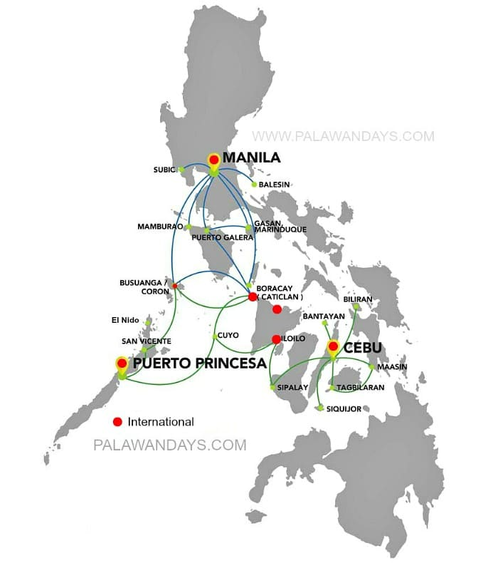

Palawan is a tourist's hotspot, having 2 of its municipality at the top 8 tourist spots in the Philippines according to Klook.
How to get to Puerto Princesa Palawan
- By Ferry: Manila to Puerto Princesa by ferry is like an 18-22 hour movie, but instead of popcorn, you have magnificent views of the Philippine Sea as your snack.
- Domestic Flights: Puerto Princesa International Airport is the gateway to your Palawan adventure. Airlines like Philippine Airlines and Cebu Pacific fly in from Manila, Cebu, and a handful of other cities daily.
- International Flights: If Manila or Cebu doesn't float your boat, you can take an AirAsia direct flight from Kuala Lumpur, Hong Kong and other select spots to Puerto Princesa.

How to get to El Nido Palawan
- By Ferry: The ferry ride from Coron to El Nido is a short 3-4 hour tour, while the one from Puerto Princesa could eat up 8 hours of your day. But remember, the slow route gives you an intimate view of Palawan's dreamy islands.
- Domestic Flights: Lio Airport, El Nido's petite airstrip, has daily flights from Manila via AirSwift—definitely your quickest (though slightly pricier) option.
- International Flights: El Nido has yet to take direct international flights, so you'll have to touchdown at Manila or Puerto Princesa first and then hop onto a domestic flight or ferry.
How to get to Coron Palawan
- By Ferry: You can take a 3-4 hour ferry ride from El Nido to Coron and vice versa daily, but if sailing from Manila, prepare for a 15-hour voyage. You can also prefer to join Big Dream Boatman's top-rated El Nido to Coron Boat Trip for a journey you can't forget all your life.
- Domestic Flights: You can drop right into Coron at Francisco B from the sky. Reyes Airport, thanks to daily flights from Manila by airlines like Cebu Pacific and Philippine Airlines.
- International Flights: Coron is in the same boat as El Nido—no direct international flights. You'll need a connecting flight from Manila or another city hub.
How to get Around Palawan
- Public Transportation: If you're on a shoestring budget, jeepneys, tricycles, and public vans between popular spots are your ride.
- Private Transportation: Rent private vehicles or motorbikes for a cushier ride. Remember to haggle a bit before hitting the road.
- Boat Rental: Island hopping is a national sport in Palawan, so you'll want to rent a boat. You can find these in plenty at Puerto Princesa, El Nido, and Coron. Please remember to check Palawan Boat Expeditions of Big Dream Boatman, as it is the number-rated expedition company in Palawan by TripAdvisor with over 600 5-star reviews.